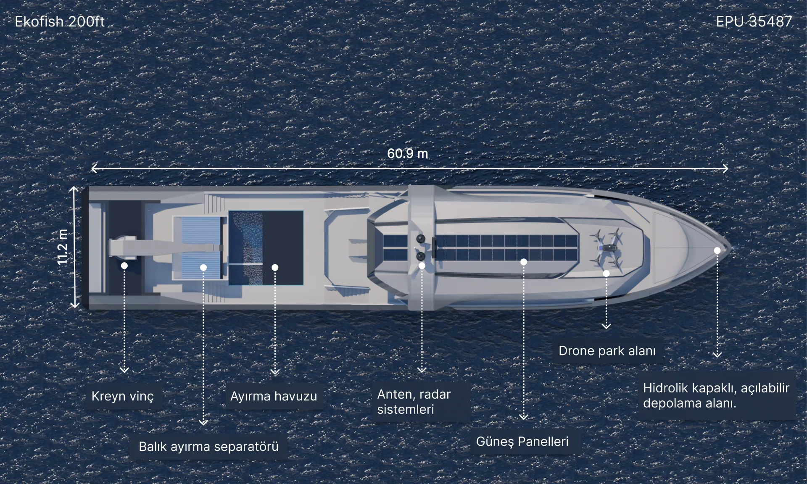
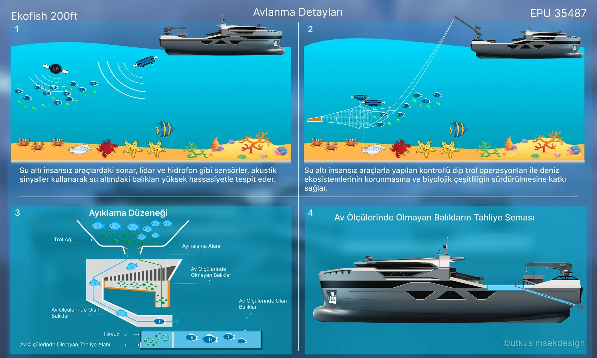
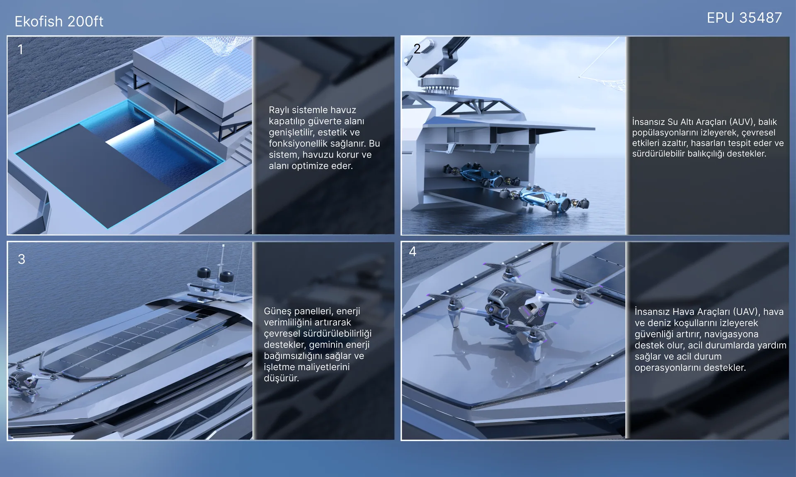
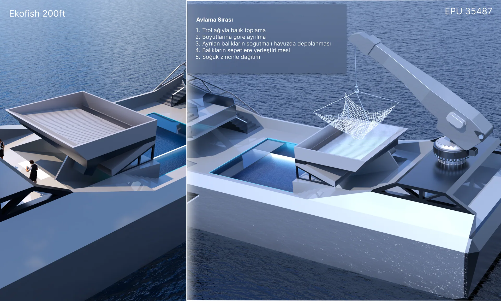
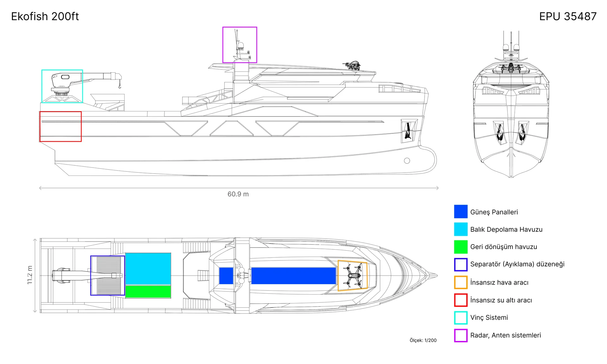

Yarışma
2022 · 12. Ulusal Gemi & Yat Tasarım Yarışması
Ekofish 200ft
Sürdürülebilir Trol
Aşağı Kaydır
Ekofish 200ft, deniz ekosistemine zarar vermeden balık stoklarını koruyan sürdürülebilir bir trol gemisi olarak geliştirildi.





Sonar, lidar ve hidrofon sensörleriyle dip trolünü hassas şekilde kontrol eden AUV'lar; balıkları yüksek hassasiyetle tespit eder, biyolojik çeşitliliği korur.
Üst güverteye entegre güneş panelleri, geminin enerji verimliliğini artırarak çevresel sürdürülebilirliği destekler ve işletme maliyetlerini düşürür.
Ayıklama düzeneği balıkları boyutlarına göre ayırır; ölçülere uymayan balıklar canlı olarak doğal ortamlarına geri bırakılır.
Güvertede ray sistemiyle kapatılabilen havuz, estetik ve fonksiyonelliği bir arada sunar; alanı koruma ve operasyona uygun şekilde optimize eder.